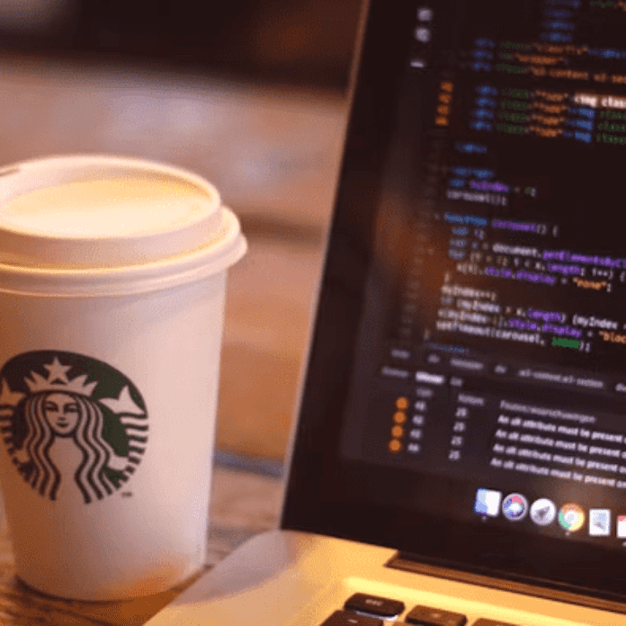

-
Фритрек и нулевой спринт: Подготовка к работе
</html>
Это было самое начало пути. На этом этапе важно было проникнуться основами и настроиться на учёбу. И, возможно, подумать, как новые знания могут повлиять на ваше будущее.
Фритрек помог мне понять что фронтенд интересный и хочется попробовать. Для меня уже давно назрел вопрос смены профессии, очень интересно бросить себе вызов и узнать, получится ли у меня.
-
1 спринт: Я — чистый лист
</html>
На первых этапах мы работали со страхами и сомнениями, которые часто испытывают новички. Один из них — страх перед чистым листом. Это, конечно же, намного сложнее, чем боязнь куска бумаги. Часто за этим ощущением скрываются более глубокие вопросы: с чего начать? а вдруг будет слишком сложно? что, если я не справлюсь?
Страха чистого листа не было. Зато была паника, "а почему я не вижу background-image???" "А как запустить live server в vs code?". Поиск ответов на очень простые вопросы занял огромное количество времени. И начался стресс и пришлось пить успокоительные таблеточки и таблеточки для мозга.
-
1 спринт: А если не получится?
<css>
Первый проект — позади! Но это всё ещё самое начало пути. Радость могла быстро померкнуть и смениться ожиданием провала. Или вы, наоборот, могли вдохновиться успехами и поверить в себя.
Для меня это было сравнимо с подъемом на высокую гору. И удивление от того, что получилось. И это была большая мотивация продолжать. До сих пор считаю, что первый проект был самым сложным.
-
2 спринт: Погоня за идеалом
<desigions>
На этом этапе вы уже достаточно разбирались в основах вёрстки, чтобы понять, как много ещё впереди. Вы могли попытаться погнаться за идеалом и понять, что он недостижим. А, может, вы вовсе и не подвержены перфекционизму и вместо того, чтобы сделать идеально, старались просто сделать.
Перфекционизмом можно заняться когда есть время, а на второй проект времени осталось очень мало. Цель была - сдать во что бы то ни стало и остаться в своей когорте.
-
2 спринт: О тех, кто рядом
care
Всё это время вы были не одиноки (хотя, возможно, иногда и чувствовали, что одни против целого мира). Вас окружали одногруппники, команда сопровождения и просто близкие люди, которым можно пожаловаться, если очередной макет просто так не поддавался. Осваивать что-то новое легче, когда рядом есть единомышленники, не правда ли?
Классно что у Практикума обучение построено так, что не только указывают на ошибки, но и хвалят. И софт-скилловые треки очень помогают справляться со страхами и сложностями. Классно, что в группе понимаешь, что и у других похожие сложности, и с тобой всё нормально. Думаю, я бы не смогла учиться, если бы обучение было построено классическим образом.
-
3 спринт: Обходные стратегии

<support>
На этом курсе вы постоянно решали разные задачи. В какой-то момент вам могло показаться, что решения просто иссякли. Значит, пришло время посмотреть на задачу под другим углом.
Третий спринт я прошла уже с большей уверенностью в себе. Потратила много времени на проектную работу, как будто долго и спокойно идёшь к цели и всё получается.
-
3 спринт: Когда опускаются руки
<lifes-style: none;>
Во время учёбы часто возникает чувство, когда не знаешь, за что хвататься. Вроде и проектную пора сдавать, и задачи хочется порешать, и в теории получше разобраться, и жизнь не забыть пожить. В такие моменты очень нужна концентрация. Вспомните, откуда вы её черпали.
Лучшая мотивация - это вспоминать о том, зачем всё это мне нужно. А я хочу сменить профессию и отвязать свою работу от офиса. С другой стороны, если сил совсем не осталось - нужно просто отдохнуть, никакая мотивация не поможет.
-
«Сейчас я здесь»
<experience>
Сейчас вы уже очень много знаете о вёрстке. Но это только начало. Во-первых, впереди ещё много материала про «красотищу». Во-вторых, с окончанием курса учёба не заканчивается. Вёрстка — это целый мир. И этот мир постоянно меняется. Познать его полностью не получится, но это тот случай, когда важен сам процесс познания. Ведь часто путь — и есть результат.
Очень рада, что дошла до этого этапа. В какой то момент я подумала что не смогу разобраться с этим проектом, и у меня нет идей. Но всё же, решить проблему получилось. Мне не хватило времени и пришлось перевестись в другую когорту, но я доделала этот проект. Думаю, даже если дальше будет сложно учиться - не остановлюсь.